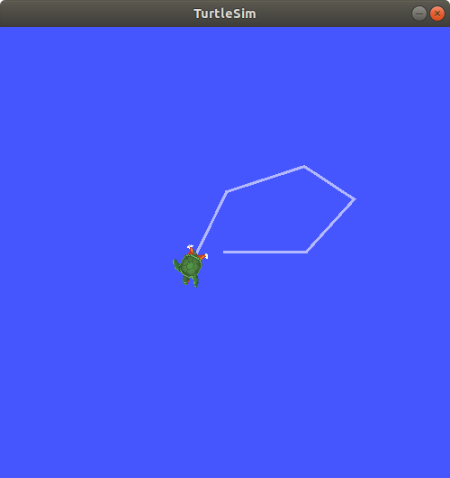
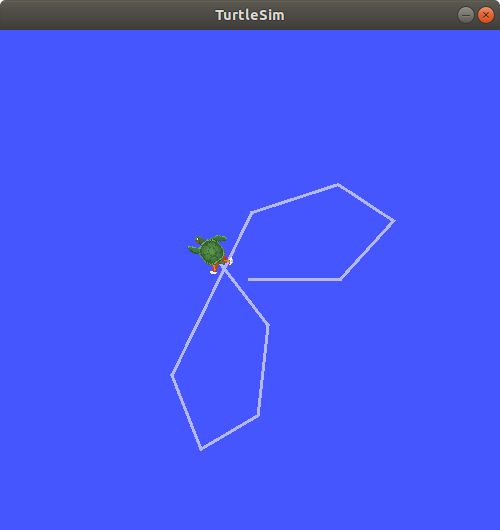

Recording and playing back data¶
Goal: Record data published on a topic so you can replay and examine it any time.
Tutorial level: Beginner
Time: 10 minutes
Contents
Background¶
ros2 bag is a command line tool for recording data published on topics in your system.
It accumulates the data passed on any number of topics and saves it in a database.
You can then replay the data to reproduce the results of your tests and experiments.
Recording topics is also a great way to share your work and allow others to recreate it.
Prerequisites¶
You should have ros2 bag installed as a part of your regular ROS 2 setup.
Note
If you’ve installed from Debians on Linux and your system doesn’t recognize the command, install it like so:
sudo apt-get install ros-<distro>-ros2bag ros-<distro>-rosbag2*
This tutorial talks about concepts covered in previous tutorials, like nodes and topics. It also uses the turtlesim package.
As always, don’t forget to source ROS 2 in every new terminal you open.
Tasks¶
1 Setup¶
You’ll be recording your keyboard input in the turtlesim system to save and replay later on, so begin by starting up the /turtlesim and /teleop_turtle nodes.
Open a new terminal and run:
ros2 run turtlesim turtlesim_node
Open another terminal and run:
ros2 run turtlesim turtle_teleop_key
Let’s also make a new directory to store our saved recordings, just as good practice:
mkdir bag_files
2 Choose a topic¶
ros2 bag can only record data from topics that are published on.
To see a list of your system’s topics, open a new terminal and run the command:
ros2 topic list
Which will return:
/parameter_events
/rosout
/turtle1/cmd_vel
/turtle1/color_sensor
/turtle1/pose
In the topics tutorial, you learned that the /turtle_teleop node publishes commands on the /turtle1/cmd_vel topic to make the turtle move in turtlesim.
To see the data that /turtle1/cmd_vel is publishing, run the command:
ros2 topic echo /turtle1/cmd_vel
Nothing will show up at first because no data is being published by the teleop.
Return to the terminal where you ran the teleop and select it so it’s active.
Use the arrow keys to move the turtle around, and you will see data being published on the terminal running ros2 topic echo.
linear:
x: 2.0
y: 0.0
z: 0.0
angular:
x: 0.0
y: 0.0
z: 0.0
---
3 ros2 bag record¶
To record the data published to a topic use the command syntax:
ros2 bag record <topic_name>
Before running this command on your chosen topic, open a new terminal and move into the bag_files directory you created earlier, because the rosbag file will save in the directory where you run it.
Run the command:
ros2 bag record /turtle1/cmd_vel
You will see the following messages in the terminal (the date and time will be different):
[INFO] [rosbag2_storage]: Opened database 'rosbag2_2019_10_11-05_18_45'.
[INFO] [rosbag2_transport]: Listening for topics...
[INFO] [rosbag2_transport]: Subscribed to topic '/turtle1/cmd_vel'
[INFO] [rosbag2_transport]: All requested topics are subscribed. Stopping discovery...
Now ros2 bag is recording the data published on the /turtle1/cmd_vel topic.
Return to the teleop terminal and move the turtle around again.
The movements don’t matter, but try to make a recognizable pattern to see when you replay the data later.

Press Ctrl+C to stop recording.
The data will be accumulated in a bag file with a name in the pattern of rosbag2_year_month_day-hour_minute_second
3.1 Record multiple topics¶
You can also record multiple topics, as well as change the name of the file ros2 bag saves to.
Run the following command:
ros2 bag record -o subset /turtle1/cmd_vel /turtle1/pose
The -o option allows you to choose a unique name for your bag file.
The following string, in this case subset, is the file name.
To record more than one topic at a time, simply list each topic separated by a space.
You will see the following message, confirming that both topics are being recorded.
[INFO] [rosbag2_storage]: Opened database ‘subset’. [INFO] [rosbag2_transport]: Listening for topics… [INFO] [rosbag2_transport]: Subscribed to topic ‘/turtle1/cmd_vel’ [INFO] [rosbag2_transport]: Subscribed to topic ‘/turtle1/pose’ [INFO] [rosbag2_transport]: All requested topics are subscribed. Stopping discovery…
You can move the turtle around and press Ctrl+C when you’re finished.
Note
There is another option you can add to the command, -a, which records all the topics on your system.
However, this might cause a circular dependency and crash your system.
It’s better to choose a subset of the topics that you need.
4 ros2 bag info¶
You can see details about your recording by running:
ros2 bag info <bag_file_name>
Running this command on the subset bag file will return a list of information on the file:
Files: subset.db3
Bag size: 228.5 KiB
Storage id: sqlite3
Duration: 48.47s
Start: Oct 11 2019 06:09:09.12 (1570799349.12)
End Oct 11 2019 06:09:57.60 (1570799397.60)
Messages: 3013
Topic information: Topic: /turtle1/cmd_vel | Type: geometry_msgs/msg/Twist | Count: 9 | Serialization Format: cdr
Topic: /turtle1/pose | Type: turtlesim/msg/Pose | Count: 3004 | Serialization Format: cdr
To view the individual messages, you would have to open up the database, in this case sqlite3, to examine it, which is beyond the scope of ROS 2.
5 ros2 bag play¶
Before replaying the bag file, enter Ctrl+C in the terminal where the teleop is running.
Then make sure your turtlesim window is visible so you can see the bag file in action.
Enter the command:
ros2 bag play subset
The terminal will return the message:
[INFO] [rosbag2_storage]: Opened database 'subset'.
Your turtle will follow the same path you entered while recording (though not 100% exactly; turtlesim is sensitive to small changes in the system’s timing).

Because the subset file recorded the /turtle1/pose topic, the ros2 bag play command won’t quit for as long as you had turtlesim running, even if you weren’t moving.
This is because as long as the /turtlesim node is active, it publishes data on the /turtle1/pose topic at regular intervals.
You may have noticed in the ros2 bag info example result above that the /turtle1/cmd_vel topic’s Count information was only 9; that’s how many times we pressed the arrow keys while recording.
Notice that /turtle1/pose has a Count value of over 3000; while we were recording, data was published on that topic 3000 times.
To get an idea of how often position data is published, you can run the command:
ros2 topic echo /turtle1/pose
Summary¶
You can record data passed on topics in your ROS 2 system using the ros2 bag command.
Whether you’re sharing your work with others or introspecting on your own experiments, it’s a great tool to know about.
Next steps¶
You’ve completed the “Beginner: CLI Tools” tutorials! The next step is tackling the “Beginner: Client Libraries” tutorials, starting with Creating a workspace.